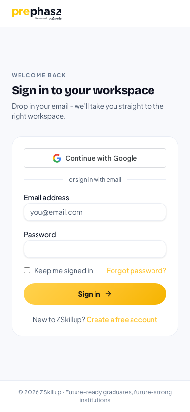
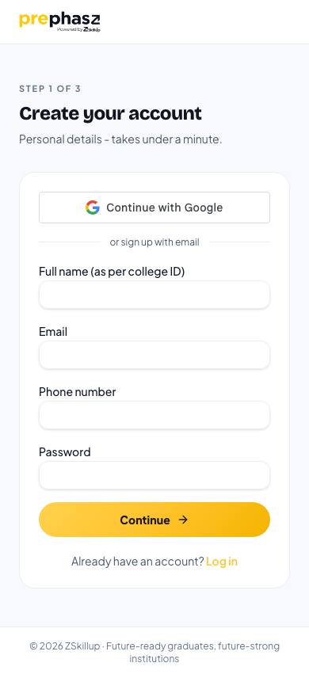

prephasz is a placement-preparation platform with four roles, 139 web pages and a live production backend running real college drives. The mobile app is not a port of that product. It is a deliberately narrow companion that does the handful of things a phone is genuinely better at — and routes everything else to the web, on purpose.
Same backend. Same APIs. No second source of truth. The server issues the attempt, the deadline, the questions and the grade; the app renders what it is told.
Every module has a verdict: in v1, planned, later, or staying on the web. The module catalogue is the record of what was left out deliberately.
Timer, grading, entitlement and every gate are server-authoritative. The app computes no business value.
No proctoring and no purchase surface in v1 — the two decisions that remove most of the launch risk.
Remote config can raise the version floor or halt every build without waiting on a store review.
A session resolves to a role, and the role decides which app renders. There is no separate admin build and no second login: the same binary serves a student, a placement officer and platform staff, with a different bottom tab bar and a different set of endpoints behind it. Authorisation is never the app's job — every screen sits behind the same backend guard the web uses.
What signing in actually resolves. The role is a claim on a server-signed token; the app reads it to pick a tab bar, which is a convenience, not a security boundary. A student who edited their own role claim would reach screens whose every endpoint still refuses them.
The reason the app exists. Builds and sits timed mock assessments, sees upcoming drives, reads reports.
Placement officer at a partner college. Drive-day participation and cohort readiness, read-only.
prephasz operations. Watches a live drive and publishes results. The other 32 console pages stay on the web.
Same mobile surface as Admin in v1. Finance, audit and access control are desk work and stay there.
The refresh token is an HttpOnly cookie precisely so page script can never read it. That posture is unchanged by anything the app does.
A native client has no cookie jar worth hanging a timed assessment on, so it receives the token in the response body and stores it in hardware-backed storage.
Native means the client header is present and neither Origin nor Referer is. Every browser sends one of those; a native fetch sends neither.
Settled by the owner before a line of app code was written. Each one removes work and risk rather than adding a feature, which is why they are at the front of this document rather than buried in an appendix.
Entitlement-aware but purchase-free. Where something is locked it says so plainly — no buy button, no price, no link to the web store on iOS. Students upgrade on the web and the app picks it up on next load.
Why: digital content sold outside IAP is the classic App Store §3.1.1 rejection, and it is discovered at review — after the whole project is built.
Proctored sittings and papers containing coding questions are visible but not startable, with an honest state. This removes the camera from the app entirely.
Why it is nearly free: the mock engine's default path is already unproctored, so the same server-timed, server-graded engine runs with no backend change at all.
The app talks to its own subdomain pointing at the same load balancer, rather than routing every candidate's traffic through the web host's proxy.
Why: the web calls its own origin on purpose, to keep the session cookie first-party. A native client has no such constraint and no reason to inherit the hop.
Parity with 139 web pages is not a first release. A login that dead-ends for three of four roles is not a launch either. Each role gets the one thing a phone is genuinely good for.
Everything else is reachable as a single labelled "Open on web" row. It never pretends to be a feature that is missing.
No business logic moves. Every value the app shows — score, percentile, XP, rank, time remaining, whether a surface is locked — is computed by the server and rendered by the client. There is nothing the app can get wrong that the web gets right.
Everything in the student release serves this sequence. It is worth reading once, because four of the five hard requirements in the runner exist to protect a single step of it.
Start hands over the whole paper. One call returns the attempt id, the server-authoritative expiry and every question, plus any answers already saved. That is what makes a phone on campus wifi viable: the paper is in hand before the network gets a chance to be bad.
A call arrives. The battery dies. Android kills the app to reclaim memory. On a laptop these are rare; on a phone they are Tuesday. The backend already solved this and the app inherits it for free: starting an attempt that is already open returns that attempt — same deadline, same saved answers — and deliberately skips the paywall and profile gates, so nobody mid-exam is ever stranded by a lapse in their plan.
The countdown derives from the issued expiry and re-anchors on every foreground and every successful request. Changing the device clock changes nothing.
Each answer is written locally and posted; failures retry from a queue that survives a cold start. Sixty seconds in a lift loses nothing.
Network, sync or telemetry failure degrades silently. The candidate keeps answering. This rule outranks every other behaviour in the app.
A paper containing coding questions, and any proctored sitting. Both are shown with their window and duration, and an honest reason.
The refusal happens before the attempt is created. Starting and backing out would leave a live attempt behind and, on a drive, spend the one sitting a student gets.
Practice between classes, and knowing when your drive is. High-stakes proctored sittings stay on a laptop with an invigilator.
Worth being precise about with colleges: the app is a practice and visibility surface, not an equivalent surface for an evaluated drive.
The student home opens on the one thing a student came to do. A live attempt always offers itself first; below that, a builder that assembles a paper from chosen sections and topics, then the catalogue.
Anything already open is offered before anything new can be started.
Thin topics, a per-plan cap or questions you have already seen — said out loud, before the timer.
Checked on the paper's coding count before start, so backing out cannot spend a sitting.
A locked surface says what is locked and that it is managed on the web. No price, no buy button.
FR-2.4 is starred because it is the one that costs a student something when it is wrong: the coding check happens on the paper, before an attempt exists.
The screen that matters most, and the one with the least room for cleverness. One question at a time, large targets, a palette one tap away, and a clock that belongs to the server.
Derived from the issued expiry, re-anchored on every foreground and successful request. A sleeping phone cannot lie about it.
A phone call mid-attempt returns to the same question. Only an explicit, confirmed exit leaves, and it leaves the attempt open.
At the deadline the attempt submits itself and the report opens. The student is never left wondering whether it counted.
Four of these exist only because this is a phone: a server-anchored clock, a durable answer queue, resume as a first-class path, and the rule that nothing in the app may block the paper.
Every number here is computed by the server and rendered by the app. Score, percentage, percentile, pass verdict, topic breakdown and the XP the attempt earned all arrive as values, never as formulas.
Percentile, pass verdict and XP arrive as values. The app has no formula to get wrong.
Every question, your answer, the correct one, and the explanation — the same content the web shows.
Any finalised attempt reopens its full report from history. Nothing is only available once.
Where the marks went, by topic, so the next practice session has an obvious subject.
Every value on these screens is server-computed. The app has no scoring, percentile or XP logic to drift out of step with the web.
A college drive is the highest-stakes thing a student does on this platform, and in v1 the app does not run the proctored ones. It does something quieter and still valuable: it puts the schedule on the device the student actually carries, so nobody misses a sitting because it was only ever on a laptop.
A row's end time is read from the drive's real closing time, never inferred from start plus duration. That exact inference once made a live drive vanish from students' lists.
Proctored or coding papers show why, what is needed, and a route to the web. A locked row is never just greyed out.
In the release after launch, "your drive starts in 30 minutes" is the single highest-value notification this product can send.
FR-5.2 is starred for history: reading a window as start plus duration, rather than the sitting's real closing time, once made a live drive disappear from students' lists mid-drive.
A placement officer has sixteen pages on the web and needs roughly two of them while standing in a room with ninety students. The question is never "what is our six-month skill-gap trend"; it is "who has not started yet, and what is their name".
Scheduling a drive, inviting a cohort and exporting a report are desk tasks. They stay on the web where they are better.
Coming back to the app during a live sitting shows the current state, not whatever was true when it was last opened.
A count tells a TPO there is a problem. A list of names lets them solve it before the window closes.
Everything else is a single labelled "Open TPO console" action rather than fourteen half-built screens.
Read-only by design. Every write a TPO performs — scheduling, inviting, exporting — is a desk task and stays on the web, reachable through one labelled action.
The admin and super-admin consoles are 67 pages of dense tables, CSV exports and large-screen charts. Almost all of it is desk work, and a phone version would be worse at the job than the web one that already exists. Exactly one slice is genuinely mobile: watching a drive while it runs, and publishing the result when it ends.
The warnings shown here were raised by web-sat attempts. The app has no camera and takes no part in proctoring.
Publishing results is the only thing this surface changes, and it is confirmed first — it is visible to every student in the sitting at once.
Catalogue, users, colleges, finance, marketing, audit. All of it is better on a 27-inch screen and none of it is urgent on a phone.
FR-7.4 is the only write in the whole admin surface, and it is confirmed first: publishing makes results visible to every student in the sitting at the same moment.
All seven authentication surfaces are in the first release, including the one most mobile apps skip: the set-password flow for a student a college bulk-invited. Colleges invite in batches of hundreds, and those students have to be able to activate on the phone in their hand.
Kill the app, restart the phone, come back a day later — still signed in. The session lives in hardware-backed storage, not a cookie jar.
The platform SDK, not a web view. A cancelled flow returns to the form with no error state.
Set-password is in v1 precisely because colleges onboard in bulk and those students arrive on a phone.
A suspended account cannot refresh into a session. The app says so as an account message, not a network failure.
FR-1.7 is the one to test hardest: a session that does not survive a force-quit turns every cold start into a login screen, which is how a practice habit dies.
Captured from the live site at 390 × 844 on 13 October 2026. These are real pages, rendered as a phone renders them now — the starting point the app improves on, not a design target. Marketing pages stay on the web; the store listing is the app's front door.


Production needs credentials this document's author does not hold, and the local environment has no seeded data. Empty-state screenshots of a dashboard with no students in it would be misleading in a requirements document, so they are absent rather than faked.
Two ways to add them before design sign-off: a read-only production student and TPO login, or a seeded local stack. Worth doing.
The public job board at /jobs
returns HTTP 200, but a browser lands on /login. The board sits
inside the authenticated route group, while only individual job pages are public.
Possibly intended. Worth confirming, because the public board is described as a marketing surface and appears in the sitemap.
The complete inventory of what the platform does today, with a verdict on each. This is the point of the document: the record of what was consciously left out, rather than forgotten. V1 first release P2 planned next P3 later WEB stays on the web
| Mock Assessment builder | V1 |
| Mock runner | V1 |
| Mock report | V1 |
| Mock history | V1 |
| Assessments / drives | V1 read-only |
| Profile | V1 |
| Help & support | V1 |
| Dashboard | P2 |
| Study Plan | P2 |
| Performance | P2 |
| Leaderboard | P2 |
| My Calendar | P2 |
| Assessment leaderboard | P2 |
| Adaptive practice | P2 |
| Non-adaptive practice | P2 |
| Practice review | P2 |
| Adaptive quiz runner | P2 |
| Company Hubs (7 tabs) | P2 |
| Company prep & PYQs | P2 |
| Sectional Hubs | P2 |
| Job board | P2 |
| My applications | P2 |
| Certificates | P2 |
| My Learning | P2 |
| Recommendations | P2 |
| Community | P3 |
| Live Sessions | P3 |
| Mock Interview | P3 |
| How XP works | P3 |
| Resume Builder | WEB |
| Coding practice | WEB |
| Plans, upgrade, cart | WEB |
| Drive day — participation | V1 |
| Placement Readiness | V1 read-only |
| Executive Dashboard | P2 |
| Student Analytics | P2 |
| Company Readiness | P2 |
| Skill Gap Analytics | P2 |
| Student Management | P2 |
| Coding Analytics | WEB |
| Interview Analytics | WEB |
| Assessment Center | WEB |
| Cohorts | WEB |
| Invitations | WEB |
| Reports & Exports | WEB |
| Subscription & billing | WEB |
| Settings | WEB |
| Login, Google, signup ×3, reset, set-password | V1 |
| Public job detail | P2 |
| Roadmap | P3 |
| Home, Prepare, About, Blog, Verify | WEB |
| Live drive monitor | V1 |
| Publish results | V1 |
| Dashboard & analytics | P2 |
| Support inbox | P2 |
| Broadcasts | P3 |
| Users, colleges, cohorts | WEB |
| Catalogue (9 surfaces) | WEB |
| Commerce (5 surfaces) | WEB |
| Marketing (4 surfaces) | WEB |
| Jobs administration | WEB |
| Feature locks, calibration | WEB |
| Audit, user sheet, reports | WEB |
| Live sessions, WhatsApp | WEB |
| Mobile remote config (new) | WEB |
Accuracy matters more than polish in a document that gets signed off, so a few things are worth stating plainly.
Organisation accounts go straight to production review. A personal account needs roughly twelve testers over fourteen days first — two to three weeks of calendar, and the single largest unknown in the launch date.
The refresh window is seven days and global. Leaving it means a student signs in weekly; raising it changes the web's posture too.
A read-only production login, or a seeded local stack. Needed before design sign-off.
To be set against the real student device mix rather than a guess. Low-end Android is the design target.
Three pull requests are open against the production repositories. None of them changes a single thing about how the web product behaves — that was the constraint, and the tests assert it.
A native client receives the refresh token in the body and keeps it in the Keychain. The guard fails closed: a browser can never opt in, even by spoofing the header. 17 tests, all of the important ones negative.
A version floor, an outage stop and per-surface flags — the lever that stops a bad build without a store review. Plus the field that lets the app refuse a coding paper before it starts one.
A costed engineering plan, a build log written to be picked up cold, and the requirements document behind these pages.
At this pace the build finishes in about four weeks. Apple's organisation enrolment takes two to four. They now finish together, which means either one can be the launch date — and only one of them is under our control. Start both developer enrolments today, confirm the Play account type, and get a cheap Android into the room.